Guild Wars 2 · Desktop build editor
Forge Guild Wars 2 builds.
Publish them with one click.
A native editor for professions, traits, skills, and gear — that publishes your build library to your own GitHub Pages site.
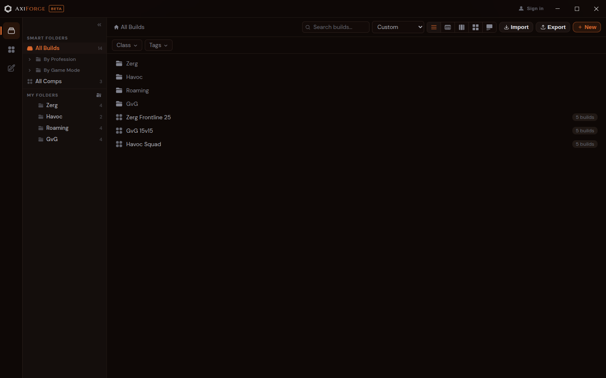
Built for every profession
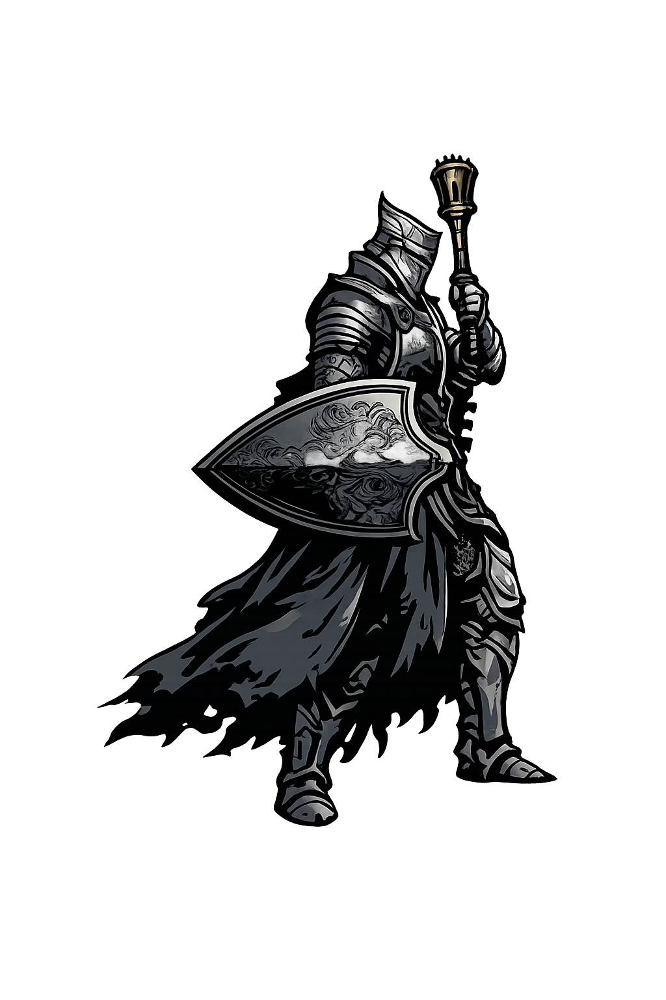
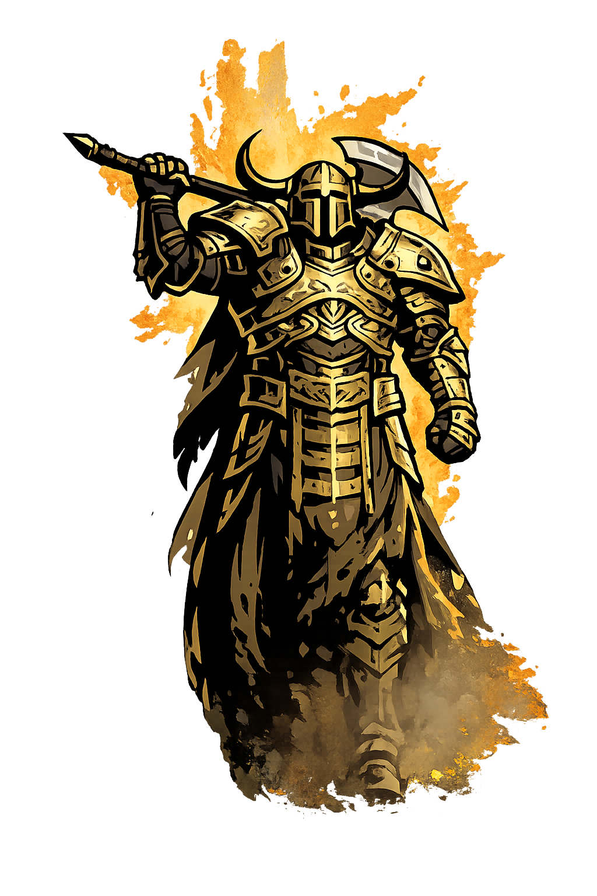
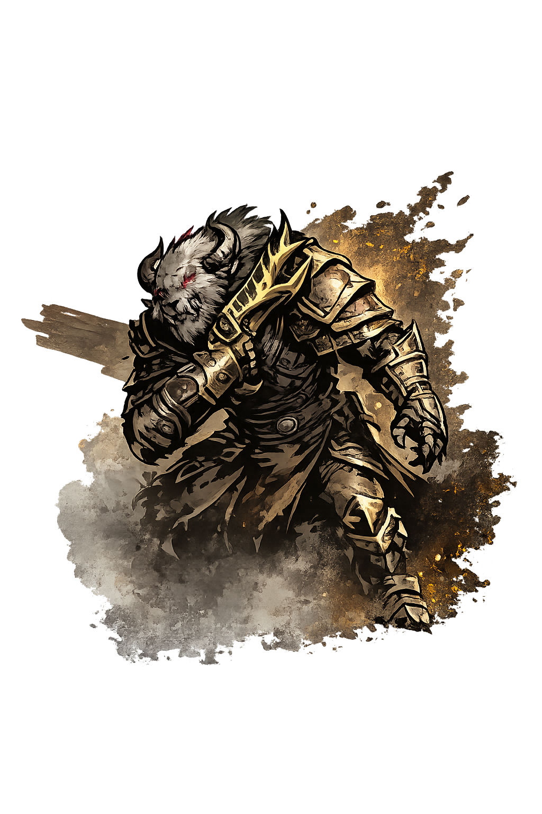
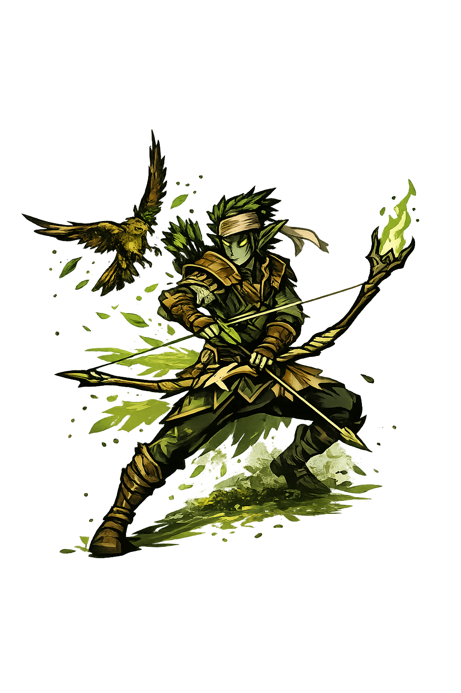
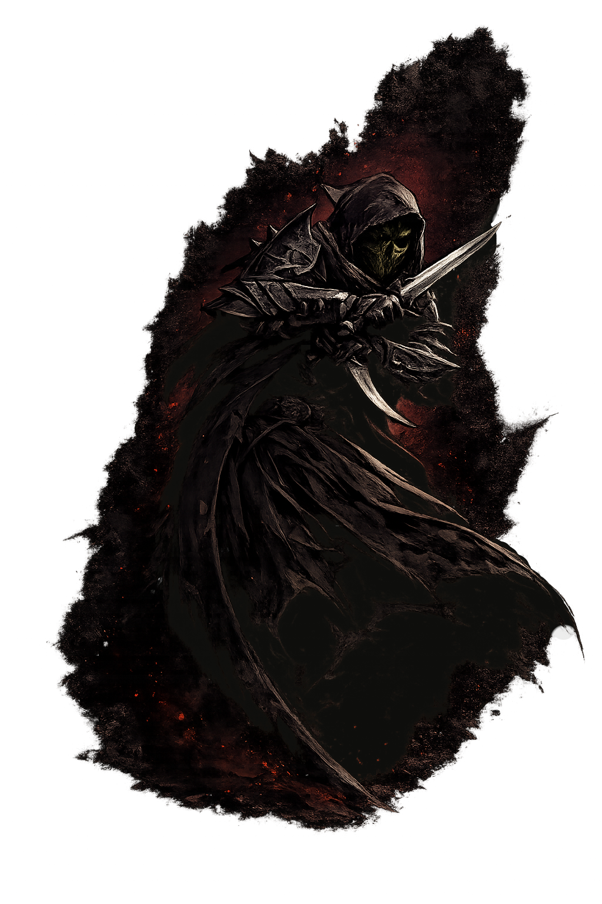
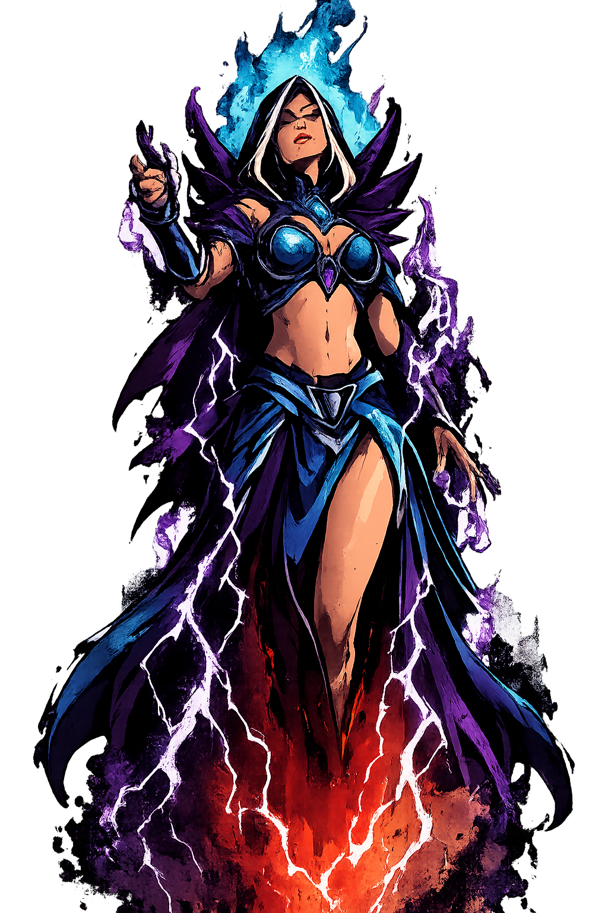
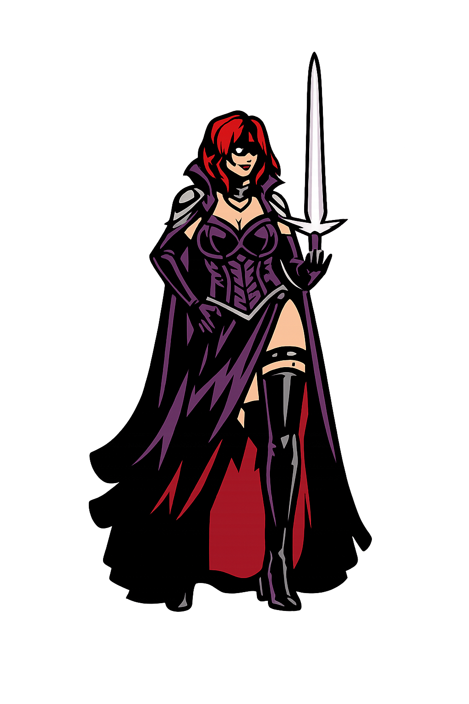
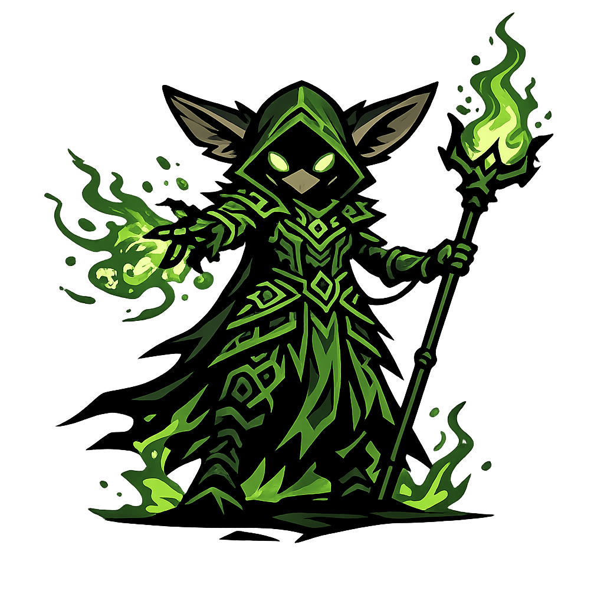
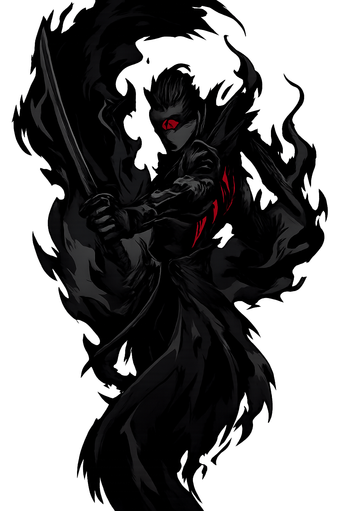
What's in the box
-
Native build editor
Professions, three specialization lines with trait picks, heal / utility / elite skills — all wired to the live GW2 API.
-
Live wiki lookups
Click any trait or skill to surface the GW2 wiki summary inline — no tab-switching, no broken links.
-
Publish to your GitHub Pages
First-time setup wires a dedicated
axiforgerepo and Pages workflow automatically. -
Equipment, tags, and notes
Annotate builds with the gear they need, the tags they belong under, and the rotation that makes them sing.
-
Four full themes
Molten Core, Frostforge, Verdant Crucible, Cinderfall — plus accent overrides on top of any of them.
-
Free, open source, no telemetry
MIT licensed. GitHub device-flow auth only — nothing else leaves your machine.
A look inside
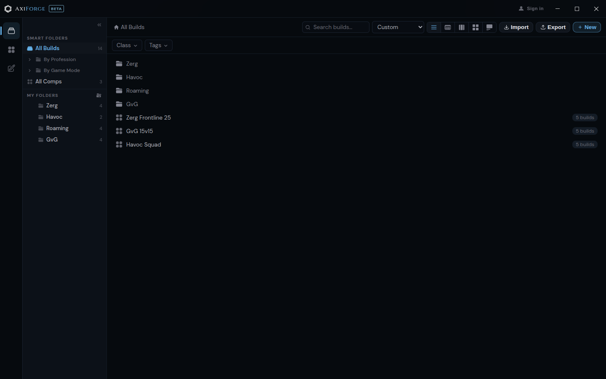
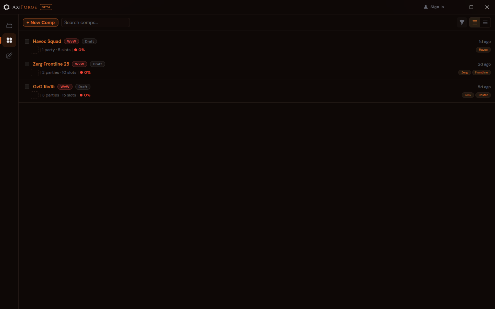
How it works
-
01
Install & sign in
Download for your OS, then sign in with GitHub via device flow.
-
02
Build
Pick a profession, dial in specs and skills, add equipment notes and tags.
-
03
Publish
One click pushes your library to
yourname.github.io/axiforge.
Get AxiForge
Latest release